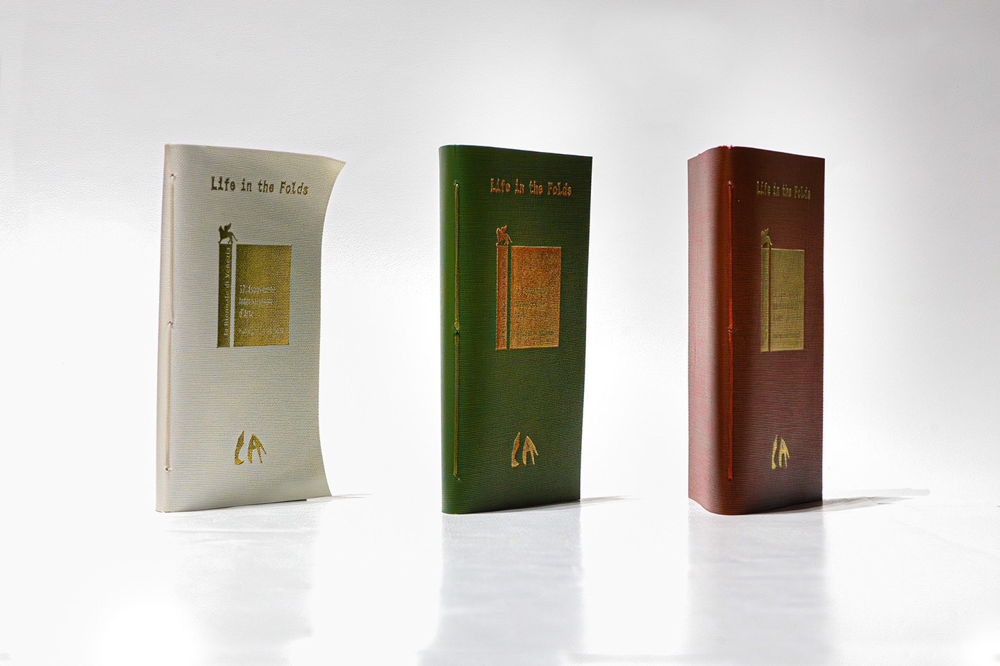
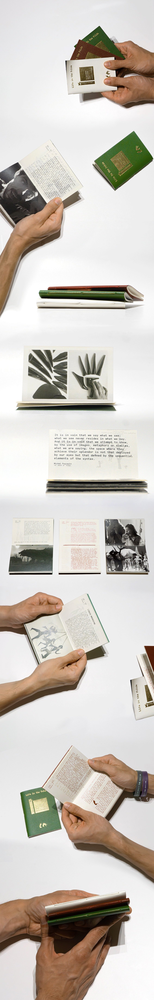

Editorial, typeface design
Life in the Folds
Small publications showcasing the work of the renowned artist Carlos Amorales for the 2017 Venice Biennale. Amorales' work focused on the difficulties that immigrants experience when moving to a new country, so I chose a passport-inspired design and size, incorporating colors from his Mexican nationality for the covers and main body. The whole publication was separated into three different “passports”. Inside, I created a custom typeface using the ocarinas he employed for his cryptographic alphabet, achieving seamless integration with the rest of his work.
